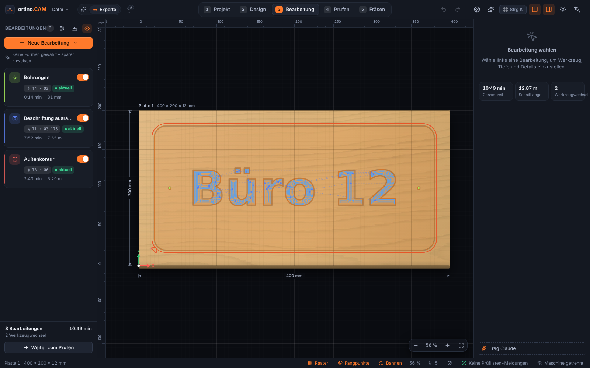
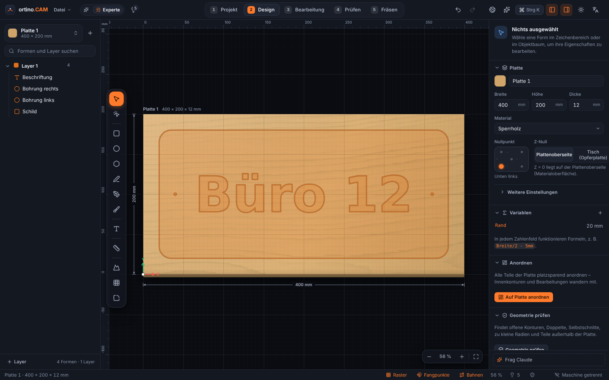
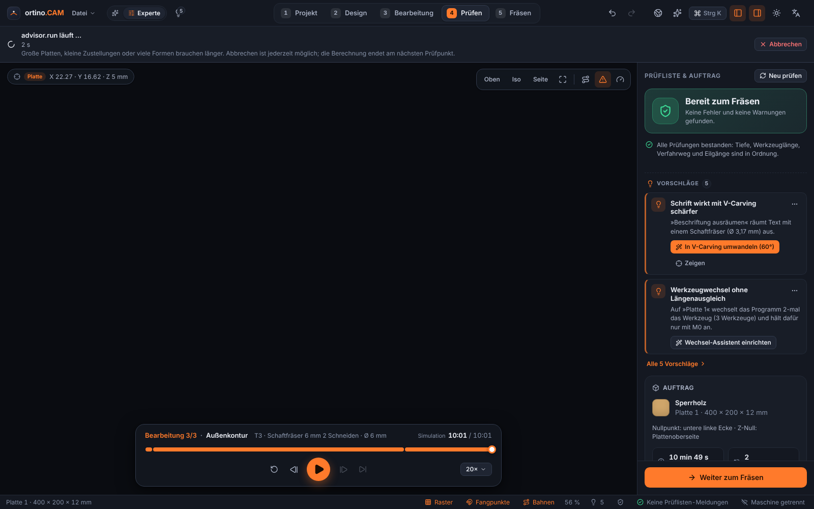
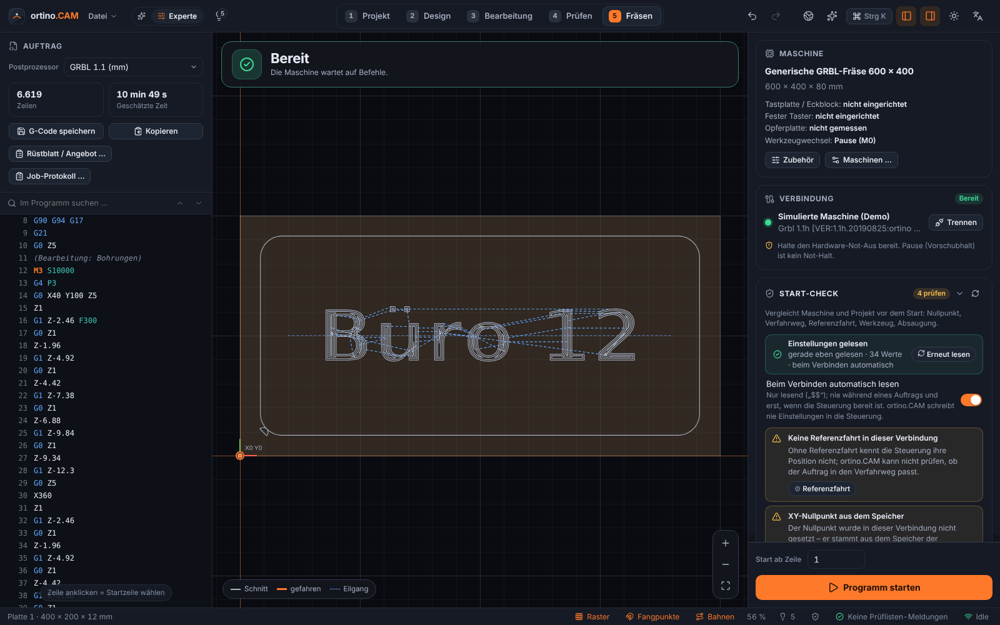

Werkzeugwege festlegen
Profil, Tasche, adaptives Räumen, Bohren, V-Carving, Inlay und 3D-Relief – mit Richtwerten für Vorschub und Drehzahl und kurzer Erklärung, warum.
Vom Entwurf zum Werkstück in einer Anwendung: zeichnen, Werkzeugwege berechnen, in 3D simulieren, prüfen und direkt an die Maschine schicken. Für Windows und GRBL-Steuerungen wie die Ultimate Bee mit xPRO V5.
Frühe Version 0.3.x · Windows 10/11 (64 Bit) · Updates im Programm

Die Oberfläche führt durch fünf Schritte – Projekt, Entwurf, Bearbeitung, Prüfen, Fräsen. Im Einfach-Modus stehen nur die wichtigsten Einstellungen, alles andere liegt unter »Mehr Einstellungen«.

Profil, Tasche, adaptives Räumen, Bohren, V-Carving, Inlay und 3D-Relief – mit Richtwerten für Vorschub und Drehzahl und kurzer Erklärung, warum.

Materialabtrag in 3D abspielen, Eilgang-Kollisionen und Übermaß finden, Prüfliste mit Lösungsvorschlägen. Bei Fehlern sind Export und Maschinenstart gesperrt.

Verbinden per USB oder TCP, Nullpunkt und Antasten, Werkzeugwechsel-Assistent, Start-Check vor jedem Lauf, Pause, Stopp und Start ab Zeile.
Eine Anwendung für Entwurf, CAM, Simulation und Maschinenbedienung – mit Hilfen für Einsteiger und Werkzeugen für Fortgeschrittene.
Formen, Text (auch auf Pfad, Einzellinienschriften), Bézier-Stift, Knoten, Boolesche Operationen, Offset, Arrays, Variablen und Formeln mit Einheiten. Import von SVG, DXF, PDF/AI und Bildern.
Profil, Tasche, adaptives Räumen, Bohren, V-Carving, Inlay, Gravur und 3D-Relief. Postprozessoren für GRBL, grblHAL, FluidNC, Mach3/4 und LinuxCNC.
Materialabtrag abspielen, Kollisionen und Übermaß erkennen, Zeit abschätzen.
Teile platzsparend auf Platten legen (auch Freiform), Passungen und Fingerzinken, Küchen- und Schrank-Designer mit Stückliste und Kantenband.
GRBL-kompatibel über USB/COM oder TCP: Handsteuerung, Referenzfahrt, Antasten mit Tastplatte oder XYZ-Eckblock, Werkzeugwechsel mit Längensensor, Tastplatte oder festem Taster.
Verfahrweg, Referenzfahrt, Nullpunkt, Werkzeug, Absaugung und mehr werden vor jedem Lauf geprüft. Das Programm schreibt nie Einstellungen in die Steuerung.
Per QR-Code koppeln, in kleinen Schritten verfahren, Pause und Stopp – nur im eigenen WLAN, bei stabiler Verbindung, aus beim Start.
PDF mit Werkzeugliste, Reihenfolge, Zeitschätzung und Vorschau – dazu eine Kostenrechnung aus Material, Maschinenzeit und Aufschlag.
Fräsdesigns entdecken, mit einem Klick laden und eigene teilen. Im Programm integriert, vom Betreiber gehostet.
ortino.CAM bringt einen MCP-Server (Model Context Protocol) mit. Claude Desktop, Claude Code und jeder andere MCP-Client können zeichnen, Bearbeitungen anlegen, die Prüfliste abarbeiten und G-Code erzeugen – live im Programmfenster, jede Aktion ein Rückgängig-Schritt.
ortino-mcp für Claude Desktop und Claude Code.127.0.0.1, zufälliger Zugangsschlüssel, nur auf Wunsch eingeschaltet) für eigene Programme und Skripte.ortino: G-Code erzeugen, Projekt prüfen, DXF/SVG exportieren, Serien aus CSV – auch für CI.// claude_desktop_config.json
{
"mcpServers": {
"ortino-cam": {
"command": "C:\\Users\\<Name>\\AppData\\Local\\ortino.CAM\\ortino-mcp.exe",
"args": []
}
}
}# Kommandozeile
ortino check tuerschild.ocam
ortino gcode tuerschild.ocam -o tuerschild.nc --post grbl
ortino export tuerschild.ocam --format dxf -o tuerschild.dxfEinstellungen der Steuerung ($…=) schreibt ortino.CAM auf keiner Stufe, auch nicht über die API.
| Stufe | Was erlaubt ist | Standard |
|---|---|---|
read | Projekt, Prüfliste, Vorschau lesen | erlaubt |
edit | Projekt ändern (je Aktion ein Undo-Schritt) | erlaubt |
machine | Verfahren, Spindel, Nullpunkt, Antasten | gesperrt, jede Aktion mit Bestätigung |
danger | Job starten, Dateien überschreiben | gesperrt, jede Aktion mit Bestätigung |
ortino.cam_<Version>_x64-setup.exe herunterladen (alternativ die .msi, …_x64_de-de.msi). Die Prüfsumme (SHA-256) steht in den Hinweisen der Version..ocam-Projekte öffnen sich danach per Doppelklick.Updates kommen im Programm selbst über das Portal des Betreibers (nicht über GitHub): Die Kopfleiste zeigt einen Hinweis, installiert wird nur nach deinem Klick, mit geprüfter Signatur und nie mitten in einem Fräsauftrag. Übermittelt werden nur Systemart, Architektur, Installationsart und die installierte Version.
Neue Mitwirkende sind willkommen. Alles läuft über GitHub Issues: Fragen, Fehler, Wünsche und vor allem Berichte von Tests an echten Maschinen. Maschinenprofile, Postprozessor-Vorlagen, Beispielprojekte, Übersetzungen und Anleitungen kannst du als Pull Request beitragen (CONTRIBUTING.md). Wer an der Entwicklung des Programms selbst mitarbeiten möchte, meldet sich per Issue »Mitarbeit am Programm«; der Betreiber gibt Interessierten den Zugang frei.